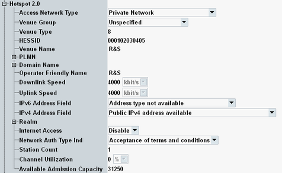
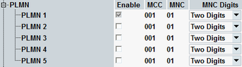
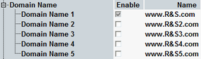
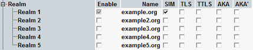

In the operation mode "Hotspot 2.0", the connection settings contain a node for configuration of information to be sent to the DUT.
The information is included in beacons, probe responses and GAS query responses as listed in the following table.
Beacon / probe response | GAS query response | ||||||||||||||||||
|---|---|---|---|---|---|---|---|---|---|---|---|---|---|---|---|---|---|---|---|
Interworking element
BSS load element
|
|
The "Hotspot 2.0" node is described in the following.

- "Access Network Type": 802.11u access network type advertised to the client
See standard IEEE 802.11-2012, section 8.4.2.94 "Interworking element". - "Venue Group" and "Venue Type": Optional venue information
See standard IEEE 802.11-2012, section 8.4.1.34 "Venue Info field". - "HESSID": Homogeneous extended service set identifier of the access point (12 hexadecimal digits)
See standard IEEE 802.11-2012, section 8.4.2.94 "Interworking element". - "Venue Name": Venue name of the IEEE 802.11 access network
See standard IEEE 802.11-2012, section 8.4.4.4 "Venue Name ANQP-element".
Defines a list of 3GPP networks that the IEEE 802.11 access network provides service for.

Each network is specified via its mobile country code (MCC, three digits) and its mobile network code (MNC, two- or three-digit format).
You can define up to five networks.
See standard IEEE 802.11-2012, section 8.4.4.11 "3GPP Cellular Network ANQP-element".
Remote command:Defines a list of domain names of the entity operating the IEEE 802.11 access network.

You can define up to five domain names.
See standard IEEE 802.11-2012, section 8.4.4.15 "Domain Name ANQP-element".
Remote command:Name of the operator of the IEEE 802.11 access network
See Hotspot 2.0 technical specification, section 4.3 "Operator Friendly Name".
Remote command:- "Downlink Speed, Uplink Speed": Speed of the link in kbit/s
See Hotspot 2.0 technical specification, section 4.4 "WAN Metrics". - "IPv6 Address Field", "IPv4 Address Field": Indicates which types of IP addresses can be allocated to the station.
See standard IEEE 802.11-2012, section 8.4.4.9 "IP Address Type Availability ANQP-element".
Defines a list of network access identifier (NAI) realms that are reachable via the IEEE 802.11 access network.

For each realm, the list indicates the realm name and the supported extensible authentication protocol (EAP) methods (SIM, TLS, TTLS, AKA, AKA').
You can define up to five realms.
See standard IEEE 802.11-2012, section 8.4.4.10 ""NAI Realm ANQP-element".
Remote command:- "Internet Access": Specifies whether the hotspot provides internet access
See standard IEEE 802.11-2012, section 8.4.2.94 "Interworking element". - "Network Auth Type Ind": Indicates the network authentication type
See standard IEEE 802.11-2012, section 8.4.4.6 "Network Authentication Type ANQP-element".
Configure the contents of the BSS load element, see standard IEEE 802.11-2012, section 8.4.2.30.
- "Station Count": Number of stations that are currently associated with the BSS
- "Channel Utilization": Percentage of time, that the access point sensed the primary channel was busy
- "Available Admission Capacity": Remaining time available via explicit admission control, in units of 32 μs/s